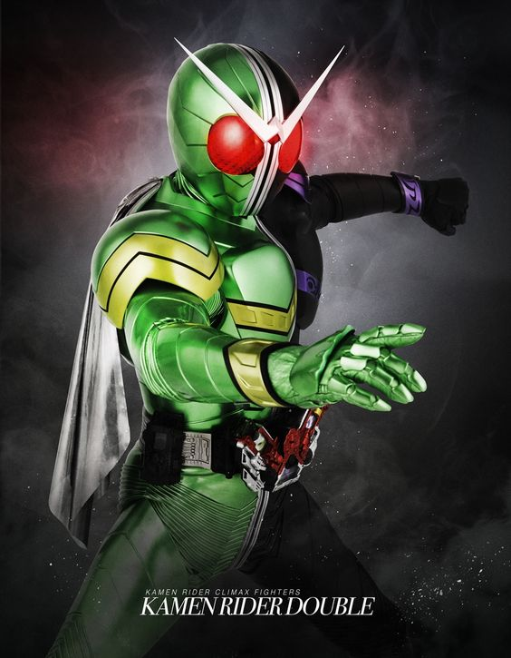
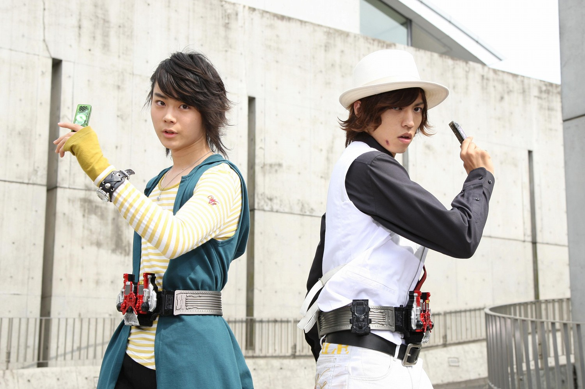
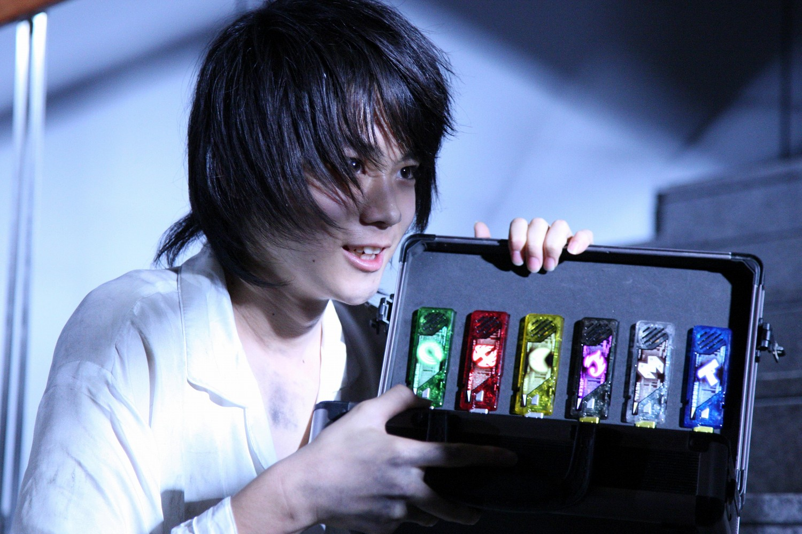
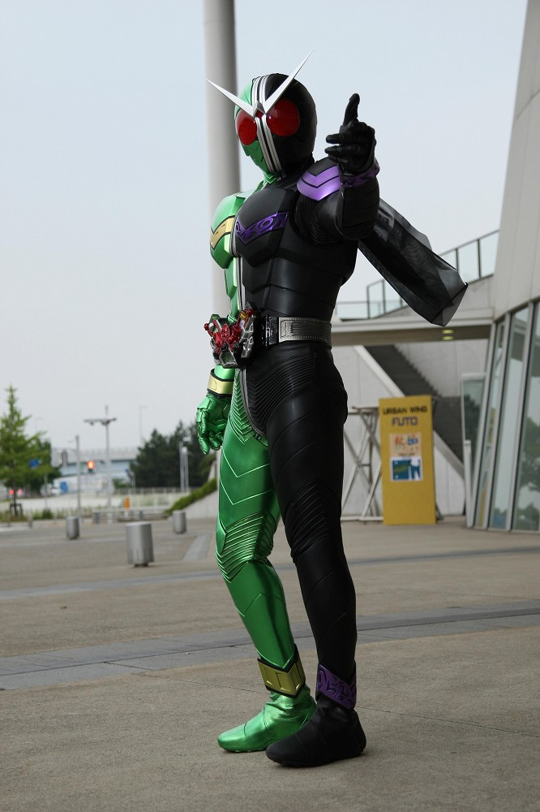
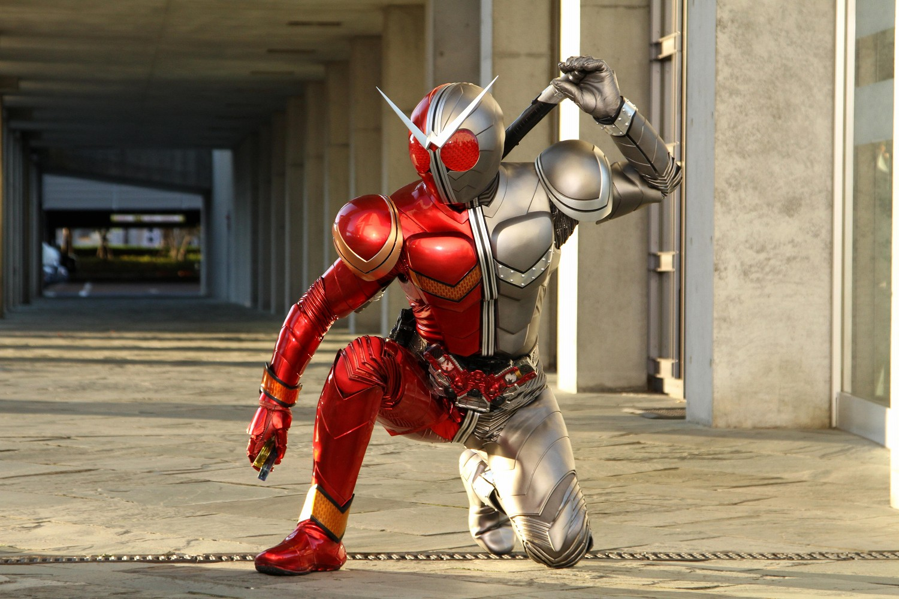
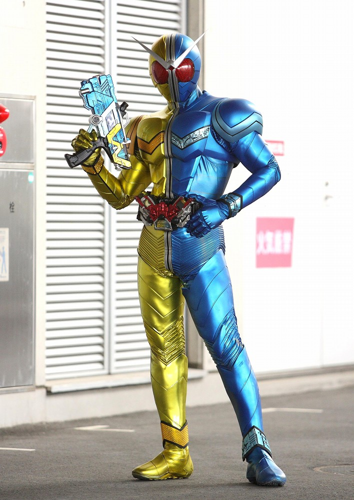
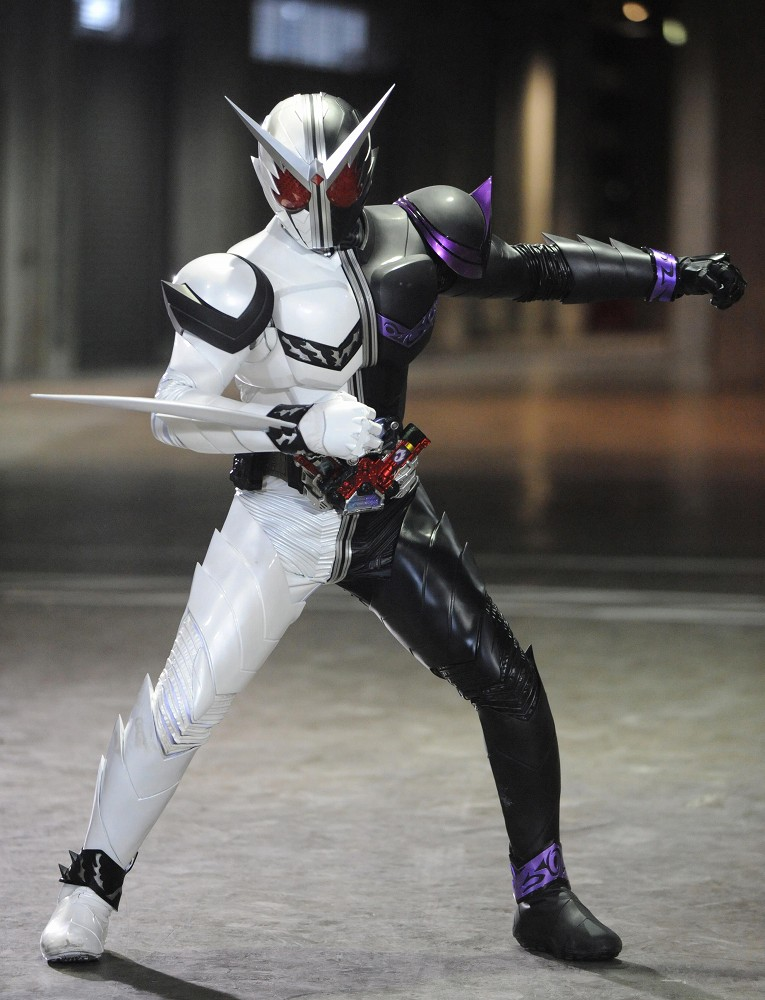
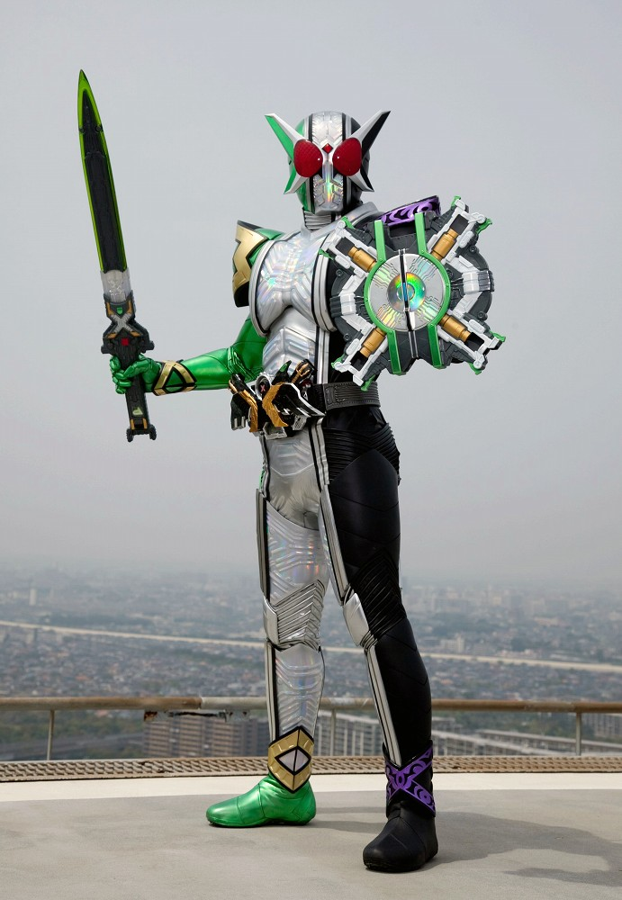

2009年から放送された「仮面ライダーＷ」に登場する仮面ライダー
変身者は左翔太朗とフィリップの二人がダブルドライバーと
二つのガイアメモリというメモリを用いて変身を行う。
二人で変身する珍しいライダー。基本形態はサイクロンジョーカー。
身長：197cm 体重：90kg パンチ力：4t キック力：6t ジャンプ力：ひと跳び50m 走力：100mを5.5秒程度

ダブルドライバーを左翔太朗が装着、それと同時に、フィリップの腰にもドライバーが出現する。
フィリップがドライバーの右側にガイアメモリを装填すると、
ガイアメモリと共に、フィリップの意識が翔太朗のドライバーに転送される。
翔太朗が左にメモリを装填、左右のスロットを外側に開くことで変身が実行される。
変身中は二人の意識はつながっているため、会話可能。

変身に使用するアイテム。
地球の記憶が内包されており、様々な種類がある。Ｗは6つのメモリと２つの特殊なメモリを使う。
フィリップは「サイクロン」「ルナ」「ヒート」の属性系
翔太朗は「ジョーカー」「トリガー」「メタル」の身体系のメモリを使う。
他に、メモリ自体が自立して行動できる「ファング」、「エクストリーム」がある。

サイクロンジョーカー
「サイクロン」と「ジョーカー」のメモリで変身
二人の変身者との適合率がどちらのメモリも高く、
素早い格闘攻撃を繰り出し、戦闘時に生じた風を
吸収し回復するバランスの良い形態

ヒートメタル
「ヒート」と「メタル」のメモリで変身
相性の良い組み合わせのため、戦闘力上昇
メタルシャフトという棒武器に炎をまとい、
敵を穿つ。火力、防御力ともに高く、
雑に強い。

ルナトリガー
「ルナ」と「トリガー」のメモリで変身
トリガーの射撃能力とルナの超常的な力がかみ合い
弾道を自在に変化可能。
他のトリガーを用いた形態より使いやすい。

ファングジョーカー
「ファング」と「ジョーカー」のメモリで変身
フィリップの身体をベースとした形態。
翔太郎の精神がフィリップ側に宿る。
高速で相手に接近し、敵を切り裂く攻撃を得意とする。
強いはずなのに勝ってる印象が薄い。

サイクロンジョーカーエクストリーム
「エクストリーム」メモリで変身する究極のＷ
中央のクリスタルサーバーは地球という
無限のデータベースとつながっており、すべての情報を
瞬時に把握可能。敵の能力の無効化に特化している。
サポート中心のアタッカー。
仮面ライダー一覧